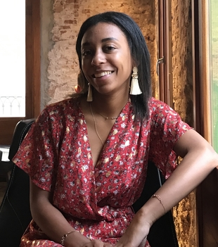

Bienvenue sur mon profil ✨

Je m'appelle Camille et je suis étudiante en 3 ème année de Bachelor in Management spécialité marketing à Audencia Business School. Je suis également en alternance chez Ker Juliette en tant que chef de projet marketing et communication.
Découvrez mon profil Linkedin
Mes missions au sein de Ker Juliette 💻
Je suis donc chef de projet marketing et communication depuis août 2020 et je suis chargée de :
- Établir une stratégie et animer des outils de communication interne et externe utiles au développement en succursale et à un futur réseau de franchisés
- Participer à la digitalisation des points de vente (fidélité dématérialisée, commandes en ligne, livraisons...)
- Participer à la gestion des réseaux sociaux de la marque ainsi qu'au webmarketing (site web, référencement, fiche établissement, gestion des avis clients...)
- Organisation et gestion d'autres outils externes : évènementiel (ouverture des restaurants), animation de la communauté des influenceurs...
Mes différentes expériences professionnelles
- Assistante digital marketing au sein d'une entreprise de e-commerce à Barcelone de septembre à décembre 2019. Ma mission principale était de m'occuper de la stratégie SEO du site internet
- Stage étudiant au sein d'une entreprise d'importation à Londres de janvier 2019 à mars 2019. Je m'occupais principalement du contrôle de stock, de la qualification de fichiers clients et fournisseurs et de la comptabilité de l'entreprise.
Pour me contacter📱
📧chataignecamille@gmail.com
📲06 98 72 78 26
📍19 rue de la convention 44100 Nantes